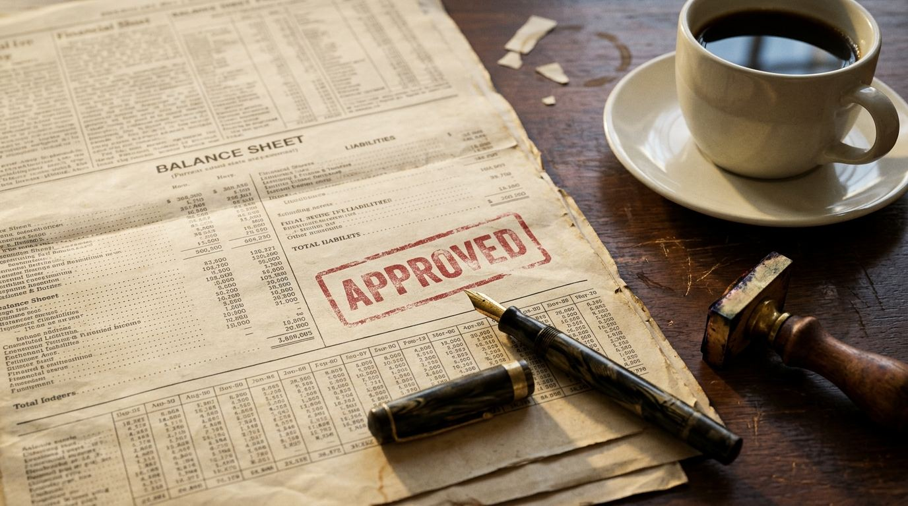
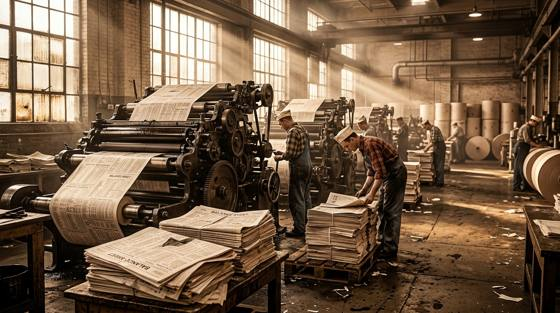
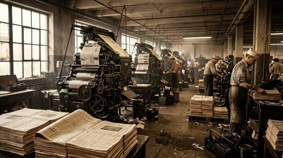
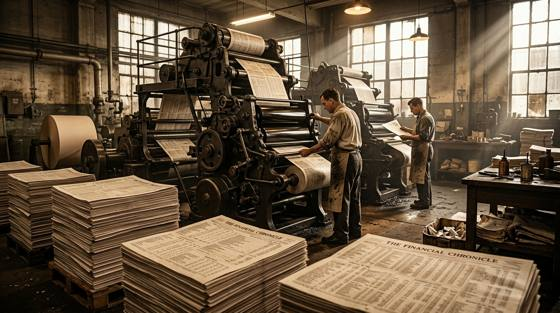

Ընկերության հաշվեկշիռը 260 000 հազ. դրամ է։ Ակտիվները դասավորեցինք ըստ այն բանի, թե որքան արագ կարող են դառնալ փող, իսկ պարտքերը՝ ըստ այն բանի, թե երբ պետք է վճարվեն։ Այնուհետև ստուգեցինք՝ արդյոք ընկերությունը կանգնած է սեփական ոտքերի վրա։
Առավել իրացվելի ակտիվները 28,000 են, հրատապ պարտավորությունները՝ 60,800 (տարբերություն -32,800). Արագ իրացվելի ակտիվներ 60,500 ↔ կարճաժամկետ պարտավորություններ 23,410 (+37,090). Դանդաղ իրացվելի 71,500 ↔ երկարաժամկետ 35,790 (+35,710). Դժվար իրացվելի 100,000 ↔ մշտական պասիվներ 140,000 (-40,000). Խախտված է Ա1–Պ1 պայմանը, ուստի հաշվեկշիռը բացարձակ իրացվելի չէ։ Ընթացիկ իրացվելիությունը +4,290 է, հեռանկարայինը՝ +35,710։ Գործակիցներ՝ բացարձակ 0.333 (Նորմայում), արագ 1.051 (Նորմայից բարձր), ընթացիկ 1.900 (Նորմայում)։
Ա-խմբերն ընդդեմ Պ-խմբերի
| Ակտիվների խումբ | Գումար | Պասիվների խումբ | Գումար | ± | Պայման |
|---|---|---|---|---|---|
| Ա1 Առավել իրացվելի (ԴՄ + ԿՖՆ) | 28,000 | Պ1 Հրատապ (կրեդիտորական պարտքեր) | 60,800 | −32,800 | ✖ Ա1 ≥ Պ1 խախտված |
| Ա2 Արագ իրացվելի (դեբիտորական պարտքեր) | 60,500 | Պ2 Կարճաժամկետ (բանկային վարկ) | 23,410 | +37,090 | ✔ Ա2 ≥ Պ2 |
| Ա3 Դանդաղ իրացվելի (պաշարներ) | 71,500 | Պ3 Երկարաժամկետ (ոչ ընթացիկ պարտ.) | 35,790 | +35,710 | ✔ Ա3 ≥ Պ3 |
| Ա4 Դժվար իրացվելի (ոչ ընթացիկ ակտիվներ) | 100,000 | Պ4 Մշտական (սեփական կապիտալ) | 140,000 | −40,000 | ✔ Ա4 ≤ Պ4 |
| Ցուցանիշ | Բանաձև | Արժեք | Նորմա | Գնահատական |
|---|---|---|---|---|
| Ընթացիկ (կարճաժամկետ) իրացվելիություն | (Ա1+Ա2) − (Պ1+Պ2) | 4,290 | > 0 | ✔ Վճարունակ |
| Հեռանկարային իրացվելիություն | Ա3 − Պ3 | 35,710 | > 0 | ✔ Դրական |
| Բացարձակ իրացվելիության գործակից | (ԴՄ+ԿՖՆ) ÷ ԸՊ | 0.333 | 0.2 – 0.5 | ✔ Նորմայում |
| Արագ իրացվելիության գործակից | (ԴՄ+ԿՖՆ+ԴՊ) ÷ ԸՊ | 1.051 | 0.7 – 1.0 | ▲ Նորմայից բարձր |
| Ընթացիկ իրացվելիության գործակից | ԸԱ ÷ ԸՊ | 1.900 | 1 – 2 | ✔ Նորմայում |



| Գործակից | Մինչև | Հետո | Փոփոխություն | Ազդեցություն |
|---|---|---|---|---|
| Բացարձակ իրացվելիություն | 0.333 | 0.131 | −0.201 | ▼ վատթարանում է |
| Արագ իրացվելիություն | 1.051 | 0.741 | −0.310 | ▼ վատթարանում է |
| Ընթացիկ իրացվելիություն | 1.900 | 1.764 | −0.136 | ▼ վատթարանում է |
Հարց 9. պաշարներ գնելուց հետո դրամական միջոցները կլինեն 5,000, կրեդիտորական պարտքը՝ 75,800։ Բացարձակ իրացվելիությունը 0.333 → 0.131, արագը՝ 1.051 → 0.741, ընթացիկը՝ 1.900 → 1.764։ Ամենաշատը տուժում է բացարձակ իրացվելիությունը, քանի որ «կենդանի» փողը վերածվում է պահեստում ընկած պաշարի։ Ռիսկ՝ հրատապ պարտքերը ժամանակին չվճարելու հավանականությունը մեծանում է։
Որքանով է ընկերությունը կանգնած սեփական ոտքերի վրա
| Ցուցանիշ | Բանաձև | Արժեք | Նորմա | Գնահատական |
|---|---|---|---|---|
| Սեփական ընթացիկ ակտիվներ (ՍԸԱ) | ՍԿ + ՈԸՊ − ՈԸԱ | 75,790 | > 0 | ✔ Դրական |
| Ընթացիկ ակտիվների ապահովվածություն ՍԸԱ-ով | ՍԸԱ ÷ ԸԱ | 0.474 | ≥ 0.1 | ✔ Ապահովված |
| Պաշարների ապահովվածություն ՍԸԱ-ով | ՍԸԱ ÷ Պաշարներ | 1.060 | 0.6 – 0.8 | ✔ Ապահովված |
| Ֆինանսական անկախության գործակից | ՍԿ ÷ Ակտիվներ | 0.538 | ≥ 0.5 | ✔ Անկախ |
| Ֆինանսական կախվածության գործակից | ՓԿ ÷ Ակտիվներ | 0.462 | ≤ 0.5 | ✔ Նորմայում |
| Ֆինանսական ռիսկի գործակից | ՓԿ ÷ ՍԿ | 0.857 | ≤ 1 | ✔ Ցածր ռիսկ |
| Ֆինանսական կայունության պաշար | ՍԸԱ − Պաշարներ | 4,290 | > 0 | ✔ Պաշար կա |
| Պաշարը պաշարների նկատմամբ, % | Պաշար ÷ Պաշարներ × 100 | 6.0 | > 0 | ✔ Դրական |
| Ֆինանսական կայունության գործակից | (ՍԿ + ՈԸՊ) ÷ Ակտիվներ | 0.676 | ≥ 0.6 | ✔ Կայուն |
Սեփական ընթացիկ ակտիվները 75,790 են։ Դրանք ծածկում են ընթացիկ ակտիվների 47.4%-ը (0.474) իսկ պաշարների ապահովվածությունը՝ 1.060։ Անկախության գործակիցը 0.538 է, կախվածությունը՝ 0.462, ֆինանսական ռիսկը՝ 0.857 (Ցածր ռիսկ)։ Կայունության պաշարը +4,290 է (+6.0% պաշարների նկատմամբ), կայունության գործակիցը՝ 0.676։ Տեսակը՝ Բացարձակ կայունություն։
Սցենարներ. Ա (շահույթի վերաներդրում) → Գկայ 0.699, Գֆռ 0.750; Բ (վարկի երկարաձգում) → 0.766 / 0.857; Գ (սարքավորում կարճաժամկետ վարկով) → 0.586 / 1.143։ Ա, Բ սցենարներն ամրապնդում են կայունությունը, իսկ Գ-ն թուլացնում է այն։ Լավագույն ճանապարհը սեփական կապիտալի և երկարաժամկետ ֆինանսավորման մեծացումն է։
| Սցենար | Գկայ հետո | Գֆռ հետո | Արդյունք |
|---|---|---|---|
| Ա Շահույթը վերաներդնել (+20,000 ՍԿ և ԴՄ) | 0.699 | 0.750 | ✔ Կամրապնդի կայունությունը |
| Բ Կարճաժամկետ վարկը դարձնել երկարաժամկետ | 0.766 | 0.857 | ✔ Կամրապնդի կայունությունը |
| Գ Սարքավորում 40,000՝ կարճաժամկետ վարկով | 0.586 | 1.143 | ✖ Կթուլացնի կայունությունը |